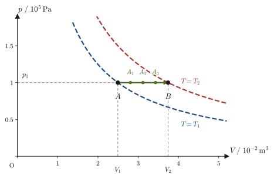
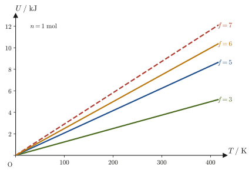
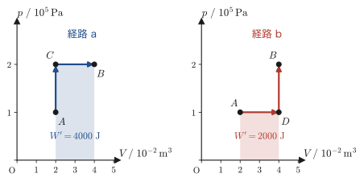

第26章熱力学の系と状態量 — 準静的過程と仕事
魔法瓶に入れたお茶は，ふたを閉めておけば何時間たっても外の世界とほとんど熱のやりとりをしない．鍋にふたをして火にかければ，外から熱はどんどん入ってくるが，中の水はふたのおかげでほとんど外へ出ていかない．やかんの口を開けたまま沸かせば，熱だけでなく水蒸気という「物質」そのものも外へ逃げていく．同じ「気体や液体が入った容器」でも，外の世界との関わり方はこのようにいろいろである．熱力学では，「外の世界とどう関わるか」に注目して，考える対象をきちんと分類することから始める．これが本章の最初のテーマである．
前章までは，気体の状態が $(p,V,T)$ で決まるという前提で，状態方程式や内部エネルギーを扱ってきた．しかし，気体の状態を $p$-$V$ 図の上に1つの点として描けるのは，気体が隅々まで一様で，圧力や温度がどこでも同じ値に落ち着いている「熱平衡状態」にあるときだけである．気体をピストンで急激に押し縮めたときのように，気体が渦を巻き，場所によって圧力が違う途中経過は，$p$-$V$ 図の上に点として表すことすらできない．
そこで熱力学では，「いつも熱平衡状態を保ちながら，十分にゆっくり進む」という理想化された変化——準静的過程——を導入し，これを基準にして現実の変化を捉え直す．準静的過程は現実には厳密に実現できない理想化だが，途中のどの瞬間も $p$-$V$ 図上の点で表せるので数式で扱いやすく，のちの章で学ぶ「可逆機関」や「エントロピー」を定義するための土台になる．
本章では，内部エネルギー $U$ のように「今どんな状態にあるか」だけで決まる状態関数と，熱 $Q$ や仕事 $W$ のように「どんな道筋をたどったか」によって値が変わる経路関数の違いも学ぶ．これは，姉妹編「大学数学（AD 02）」第6章（全微分）・第34章（完全微分方程式）で学んだ数学——ある量の微小変化が「完全微分」か「不完全微分」か——が，熱力学の言葉にそのまま対応する場面である．
さらに，気体分子運動論から単原子分子理想気体の $U=\tfrac32nRT$ を導き，分子運動の自由度によって一般化する．そして，第23章で学んだ熱力学第1法則を本書の符号の約束（された仕事 $W$／した仕事 $W'$）で書き直し，最後に，力学の仕事の定義から出発して仕事の一般式 $\dd'W=-F\,\dd x$（外圧のもとでは $\dd'W=-p_{\mathrm{ex}}\dd V$）を導く．これは，次章以降で気体の膨張・圧縮の仕事を計算するときの出発点になる式である．
- 熱・仕事・物質のやりとりの有無による系の分類——孤立系・閉じた系・開いた系——と，エネルギー・仕事・熱の定義，理想気体・実在気体の内部エネルギーの違い（分子間力の有無）
- 状態関数（結果だけで決まる量）と経路関数（経緯によって値が変わる量）の違いを，具体例を通じて区別できるようになること
- 準静的過程（熱平衡を保ちながら十分にゆっくり進む理想化された過程）・可逆過程・不可逆過程の定義と，準静的過程がなぜ「理想的だが便利」なのかの理由
- 気体分子運動論（第24章）の結果から，単原子分子理想気体の内部エネルギー $U=\tfrac32nRT$ を導き，分子運動の自由度（並進・回転・振動）によって内部エネルギーの式がどう変わるかを理解すること
- 熱力学第1法則を，本書の符号の約束（された仕事 $W$，した仕事 $W'=-W$）で正しく書き直し，内部エネルギー（完全微分 $\dd U$）と熱・仕事（不完全微分 $\dd'Q$，$\dd'W$）の違いを数学的に理解すること
- 力学の仕事の定義 $\dd'W=-F\,\dd x$ から，気体の仕事の一般式 $\dd'W=-p_{\mathrm{ex}}\dd V$ を導き，準静的過程では $W'=\int p\,\dd V$（$p$-$V$ 曲線の下の面積）になることを理解すること
もとにしたノート：望月泰英『物理学ノート 熱力学』 pp. 25–31．
26.1 系の分類 — 孤立系・閉じた系・開いた系
物理学に限らず，何かを調べるときには，まず「何を調べる対象とするか」をはっきり決める必要がある．たとえば，ピストン付きのシリンダーに閉じ込めた気体の振る舞いを調べたいとき，シリンダーの外にある空気や，実験室の壁，さらには実験をしている人間まで全部まとめて考える必要はない——気体そのものと，気体に直接影響する範囲（ピストンや，熱の出入りする壁）だけに注目すれば十分である．
定義26.1 系と外界
系（system）とは，世界の内，我々が特別に関心をもっている部分のことである（気体だけでなく，物体そのものを系と呼んでもよい）．外界（surroundings）とは，系の外の領域で，我々が測定を行う場所のことである．たとえば，シリンダー内の気体を系とすれば，シリンダーの壁やピストン，実験室全体が外界にあたる．
系と外界の間で，熱・仕事・物質のやりとりがあるかないかによって，系は次の3種類に分類できる．
定義26.2 孤立系・閉じた系・開いた系
| 系の種類 | 熱のやりとり | 仕事のやりとり | 物質のやりとり |
|---|---|---|---|
| 孤立系（isolated system） | なし | なし | なし |
| 閉じた系（closed system） | あってよい | あってよい | なし |
| 開いた系（open system） | あってよい | あってよい | あり |
すなわち，孤立系は熱・仕事・物質のどれも出入りしない系，閉じた系は物質だけが出入りしない系（熱や仕事は出入りしてよい），開いた系は物質も出入りする系である．
注意：熱は通さないが仕事は出入りする「断熱系」はどれか
断熱壁でできたシリンダーとピストンに気体を閉じ込めた系は，熱も物質も出入りしないが，ピストンを押したり引いたりすれば仕事が出入りして，内部エネルギーが変わる（23.8節の断熱変化）．この系は，仕事が出入りするので厳密な意味での孤立系ではなく，閉じた系の特別な場合（断熱系，adiabatic system）として扱う．
例題26.1 身の回りの系の分類
次の(a)〜(d)を，孤立系・閉じた系・開いた系のいずれかに分類せよ．ただし，いずれも十分に短い時間で考えるものとする．(a) ふたをしっかり閉めた魔法瓶に入れたお茶．(b) 密閉されていて，外壁を通して熱だけは伝わる金属容器に入れた気体．(c) ふたを開けたまま火にかけて沸騰させているやかんの中の水．(d) 断熱壁のシリンダーに気体を閉じ込め，ピストンをゆっくり押し込んでいるときの気体．
解答 (a) 魔法瓶は，断熱材と真空層によって熱の出入りを極力防ぎ，かつふたを閉めているので物質（お茶や水蒸気）の出入りもない．したがって孤立系（に近い理想化）とみなせる．実際には魔法瓶も完全な断熱ではなく，時間が経てば少しずつ冷めていくが，短時間ならよい近似で孤立系として扱える．
(b) 金属容器は熱を伝えるので外界との熱のやりとりはあるが，密閉されているので物質の出入りはない．したがって閉じた系である．
(c) やかんの水は，コンロの火から熱を受け取っており（熱のやりとりあり），かつ沸騰によって水蒸気が口から外へ逃げていく（物質のやりとりあり）．したがって開いた系である．
(d) 断熱壁なので熱の出入りはなく，シリンダーは密閉されているので物質の出入りもない．しかし，ピストンを押すことで外界から仕事をされている．仕事が出入りするので孤立系ではなく，熱を通さない特別な閉じた系（断熱系）である．この気体の内部エネルギーは，された仕事の分だけ増える．
26.2 エネルギー・仕事・熱と内部エネルギー
系を定義したので，次に，系の中でやりとりされる「エネルギー」「仕事」「熱」という3つの言葉の意味をあらためて確認しておく．高校物理でも仕事とエネルギーは学んだはずだが，熱力学ではこれらの言葉をより厳密に，かつ「系」という視点から定義し直す．
定義26.3 エネルギー・内部エネルギー・仕事・熱
エネルギー（energy）とは，仕事をする能力のことである．内部エネルギー（internal energy）$U$ とは，系を構成する分子の熱運動（並進・回転・振動）のエネルギーと，分子どうしの相互作用のエネルギーとの総和である．仕事（work）とは，ある力に対抗して運動することによるエネルギーの輸送のことである．熱（heat）$Q$ とは，系と外界との間の温度差の結果生じるエネルギーの輸送のことである．
注意：内部エネルギーには「容器ごと動く運動」も「高さの位置エネルギー」も含めない
内部エネルギー $U$ に含めるのは，分子の内部の乱雑な運動と，分子どうしの相互作用のエネルギーだけである．容器ごと動いているときの運動エネルギーや，容器を高い所へ持ち上げたときの位置エネルギーは含めない（高校で学んだ「力学的エネルギー」とは別のエネルギーである）．
注意：熱と仕事は，系が「持っている」量ではなく「移動中のエネルギー」
仕事も熱も，どちらも「エネルギーが系と外界の間を移動すること」だが，起源が違う．仕事は，力に逆らって物体が動くという力学的な変位によって運ばれるエネルギーであるのに対し，熱は，温度差だけを原因として運ばれるエネルギーである．
そして，熱も仕事も，系が「持っている」量ではなく，過程の途中で境界を越えて移動したエネルギーの量を指す言葉である．「この気体は熱 $Q$ を持っている」とは言わず，「この過程で気体は熱 $Q$ を受け取った」と言う．だから $Q$ や $W$ は，始状態・終状態だけで決まる量ではない（26.3節・26.6節）．力学だけを学んでいたときは仕事の経路しか見えていなかったが，熱力学第1法則（第23章 23.4節）は，そこに熱の経路を対等な資格で付け加えたエネルギー保存則だったことを思い出そう．
内部エネルギー $U$ の中身は，気体分子を1個1個の粒子として見たときに，理想気体と実在気体とで異なる．
定義26.4 理想気体の内部エネルギー
理想気体の場合，分子どうしの間にはたらく力（分子間力）を無視するので，内部エネルギー $U$ は，各分子がもつエネルギーの和だけになる．とくに単原子分子の理想気体では，分子1個がもつエネルギーは並進の運動エネルギーだけである．気体分子が $n\cdot N_{\mathrm A}$ 個（$n$ は物質量 $[\mathrm{mol}]$，$N_{\mathrm A}$ はアボガドロ定数）あり，$k$ 番目の分子の質量を $m$，速度を $\bm{v}_k$ とすると，
$$ U=\sum_{k=1}^{n N_{\mathrm A}}\frac{1}{2}m\abs{\bm{v}_k}^2 $$となる．（2原子分子以上の分子では，これに回転や振動のエネルギーが加わる．26.5節．）
定義26.5 実在気体の内部エネルギー
実在気体の場合，分子どうしの間に分子間力（引力・斥力）がはたらくため，内部エネルギー $U$ は，各分子の運動エネルギーと，分子間力に対応するポテンシャルエネルギー（相互作用のエネルギー）の総和になる．気体が薄く（分子どうしが十分に離れていて）分子間力を無視できる極限では，実在気体の内部エネルギーは理想気体の内部エネルギー（定義26.4）に近づく．
イメージ：なぜ実在気体には「もう1つの項」が必要なのか
気体分子どうしが分子間力（たとえばファンデルワールス力）で引き合っているとき，分子どうしを引き離すには外からエネルギーを与えてやる必要がある——これはちょうど，地面から物体を持ち上げるのに重力に逆らって仕事をする必要があるのと同じ構造である（第24章 24.4節で学んだファンデルワールスの状態方程式の $a/V^2$ の項が，この分子間力を表していたことを思い出そう）．したがって，実在気体の分子には，飛び回る運動エネルギーだけでなく，互いの位置関係で決まる「位置エネルギー」に相当する分だけ余分にエネルギーが蓄えられている．理想気体はこの分子間力をそもそも無視するモデルなので，位置エネルギーの項が現れず，運動エネルギーだけで内部エネルギーが決まる．
内部エネルギーが「不変」か「変化する」かは，系の分類（26.1節）と結びついている．孤立系は熱・仕事・物質のいずれも出入りせず，外界とのエネルギーのやりとりが一切ないので，内部エネルギー $U$ は不変である．一方，閉じた系・開いた系は，外界との間で熱や仕事（さらに開いた系では物質にともなうエネルギー）のやりとりがあるので，内部エネルギーは一般に変化する．たとえ熱を通さない断熱系でも，仕事が出入りすれば $U$ は変わる——この「変化のしかた」を定量的に述べたものが，熱力学第1法則である（26.6節で本書の符号の約束にもとづいて改めて書き直す）．
例題26.2 理想気体と実在気体の自由膨張
断熱壁でできた剛体の容器が仕切りで2つに分けられていて，一方に気体が入り，もう一方は真空になっている．仕切りを取り除き，気体を真空の部分へ膨張させる（これを自由膨張という．熱の出入りも，外部への仕事もない）．(a) 理想気体，(b) 分子間に引力がはたらく実在気体，のそれぞれについて，膨張後の温度は最初と比べてどうなるか，理由とともに説明せよ．
解答 容器は断熱壁なので $Q=0$ である．また，容器は剛体で，気体は真空へ膨張するので，外部に仕事をしない（$W'=0$）．したがって熱力学第1法則（第23章）より $\Delta U=Q-W'=0$ となる．膨張の途中では気体は乱れた状態になるが，最初と最後はどちらも熱平衡状態であり，内部エネルギーは状態関数なので，$U_{\text{後}}=U_{\text{前}}$ が成り立つ．
(a) 理想気体では，定義26.4より $U$ は分子の運動エネルギーの和だけで決まるので，$\Delta U=0$ はそのまま運動エネルギーが変わらないこと，すなわち温度が変わらないことを意味する（実際，理想気体の自由膨張で温度は変わらない）．
(b) 実在気体では，定義26.5より $U$ は運動エネルギーと分子間力のポテンシャルエネルギーの和である．気体が膨張すると分子どうしの平均距離が広がり，引力にさからって分子を引き離すので，ポテンシャルエネルギーが増加する．$U$ 全体は一定なので，その分だけ運動エネルギーは減少しなければならない．運動エネルギーの減少は温度の低下を意味するから，引力型の実在気体の自由膨張では，温度はわずかに下がる．
下がり方の大きさは，ファンデルワールス気体の内部エネルギー $U=nC_{V,\mathrm m}T-an^2/V$（第27章 27.4節）を使って見積もれる．$\Delta U=0$ より，体積 $V_1$，温度 $T_1$ の状態から体積 $V_2$，温度 $T_2$ の状態になるとき，
$$ nC_{V,\mathrm m}T_1-\frac{an^2}{V_1}=nC_{V,\mathrm m}T_2-\frac{an^2}{V_2}\quad\Longrightarrow\quad T_2-T_1=-\frac{an}{C_{V,\mathrm m}}\left(\frac{1}{V_1}-\frac{1}{V_2}\right) $$である（$V_2\gt V_1$ なら右辺は負，つまり温度は下がる）．たとえばアルゴン（単原子分子，$C_{V,\mathrm m}=\tfrac32R\approx12.5\ \mathrm{J/(mol\,K)}$，$a=0.1355\ \mathrm{Pa\,m^6/mol^2}$）$1\ \mathrm{mol}$ を $V_1=10\ \mathrm L=1.0\times10^{-2}\ \mathrm{m^3}$ から $V_2=20\ \mathrm L$ に自由膨張させると，
$$ T_2-T_1=-\frac{0.1355\times1}{12.47}\left(\frac{1}{1.0\times10^{-2}}-\frac{1}{2.0\times10^{-2}}\right)\ \mathrm K\approx-0.54\ \mathrm K $$となり，温度は約 $0.5\ \mathrm K$ 下がる．単位は $\mathrm{Pa\,m^6/mol}\times\mathrm{m^{-3}}\div\mathrm{J/(mol\,K)}=\mathrm{Pa\,m^3\,K/J}=\mathrm K$ となって温度の単位に一致する．
なお，これとよく似た現象に，絞り膜（多孔質の栓）を通して気体を流し続けるジュール＝トムソン効果がある（第27章 27.6節）．こちらは容器の中の気体の1回きりの変化ではなく定常的な流れで，一定に保たれる量も違う別の過程だが，温度変化の原因が分子間力にある点は共通している．
26.3 状態関数と経路関数
系の状態を特徴づける量（圧力 $p$，体積 $V$，温度 $T$，内部エネルギー $U$ など）には，実は性質の異なる2つのグループがある．一方は「今どんな状態にあるか」だけで値が決まる量，もう一方は「その状態に至るまでにどんな道筋（経路）をたどってきたか」によって値が変わってしまう量である．この違いを区別することが，熱力学を理解するうえで決定的に重要になる．
定義26.6 状態関数
状態関数（state function）とは，系の現在の状態だけに依存する性質をもつ関数で，その状態がどのように作られたか（どんな経路をたどってきたか）には依存しない量のことである．
定義26.7 経路関数
経路関数（path function）とは，系がその状態に至るまでにどのような状態を経てきたかという経緯に依存する性質をもつ関数で，最初と最後の状態（結果）だけからは値が決まらない量のことである．
イメージ：状態関数は「結果」だけを見る，経路関数は「経緯」だけを見る
状態関数は，最初と最後の状態さえ分かれば値が決まる——途中の道筋は関係ない．経路関数は逆に，途中の道筋（経緯）そのものが値を決めてしまう——最初と最後の状態が同じでも，道筋が違えば値も違ってよい．次の2つの身近な例で，この違いを具体的に確認しよう．
例26.1 経路関数の例——駅の往復運賃
Y君はA駅からB駅に行って，B駅から出ることなくそのままA駅に帰った．しかし，Y君は駅から出るとき，A→B，B→A駅の往復分の運賃を払うように言われた．
Y君の最終的な位置（結果）だけを見れば，出発したA駅に戻ってきており，まるで「何もしなかった」かのようである．しかし，実際に支払う運賃は，A駅とB駅を結ぶ経路をどれだけ移動したか（経緯）によって決まる——結果だけを見ていては運賃は分からず，経路そのものを知る必要がある．運賃は経路関数の典型例である．
例26.2 状態関数の例——テストの成績
Y君は明日のテストのために，一週間前から父が寝ていた時間に徹夜して勉強した．しかし，Y君のテストの成績はあまり良くなく，なぜできなかったのかと叱られてしまった．
Y君がどれだけ苦労して（どんな経緯で）勉強したかは，テストの成績という「結果」には（残念ながら）反映されない．採点者から見れば，答案という最終的な状態（結果）だけがすべてであり，そこに至る過程がどれほど大変だったかは関係がない．成績は状態関数の典型例——ただし，その状態関数を良くするための努力（経路）を惜しんではいけない，という教訓つきの例である．
気体の状態量にあてはめると，内部エネルギー $U$ は状態関数の代表例である——ある状態の内部エネルギーは，その状態の温度・体積などだけで決まっており，「どうやってその状態にたどり着いたか」にはよらない（このことは26.6節で数学的にも確認する）．一方，熱 $Q$ や仕事 $W$（およびその「した」版 $W'$）は経路関数である．熱や仕事は，系が「持っている」量ではなく，過程の途中で境界を越えて移動したエネルギーの量だからである．同じ始状態・終状態の間でも，$p$-$V$ 図の上でたどった道筋が違えば，やりとりされる熱や仕事の量は変わる．しかも，これは急激に変化させたかゆっくり変化させたかの違いだけではなく，どちらも準静的にゆっくり変化させる場合でも，道筋が違えば値が違う（26.6節の例題26.7で数値を使って確かめる）．
例題26.3 山登りにたとえる状態関数と経路関数
登山者が，同じ山のふもと（標高 $0\ \mathrm{m}$）から山頂（標高 $1500\ \mathrm{m}$）まで登るのに，まっすぐな急な尾根道（歩いた距離 $3000\ \mathrm{m}$）を通る場合と，ゆるやかに蛇行する迂回路（歩いた距離 $6000\ \mathrm{m}$）を通る場合を考える．登山者の「標高」と「歩いた距離（歩数に比例するとしてよい）」は，それぞれ状態関数・経路関数のどちらにあたるか，理由とともに述べよ．
解答 標高は，登山者が「今どこにいるか」という現在の位置だけで決まる量であり，どちらの道を通ってきたかにはよらない——山頂に着いた時点で，標高は尾根道でも迂回路でも同じ $1500\ \mathrm{m}$ である．したがって標高は状態関数である．一方，歩いた距離は，まさにどの道（経路）を通ったかによって値が変わる——尾根道なら $3000\ \mathrm{m}$，迂回路なら $6000\ \mathrm{m}$ と，同じふもとから同じ山頂まで行くのに全く異なる値になる．したがって歩いた距離は経路関数である．熱力学の言葉で言えば，標高の変化 $\Delta h=h_{\text{山頂}}-h_{\text{ふもと}}=1500\ \mathrm{m}$ は内部エネルギーの変化 $\Delta U$ に，歩いた距離は熱 $Q$ や仕事 $W$ に対応する——山頂という同じ「終状態」にたどり着くのに，経路によって費やす歩行距離（＝経路関数の値）は変わるが，たどり着いた標高（＝状態関数の値）は経路によらず同じである．
26.4 準静的過程・可逆過程・不可逆過程
気体の状態を $p$-$V$ 図の上に点として描けるのは，気体が熱平衡状態にあるときに限られる．
定義26.8 熱平衡状態
熱平衡状態（thermal equilibrium）とは，マクロ的に見て等方・均一で，気体のどこをとっても圧力も温度も一定になっている状態のことである．
点 $\mathrm A$ と点 $\mathrm B$ が，それぞれ圧力・体積・温度が $(p_1,V_1,T_1)$，$(p_1,V_2,T_2)$ である熱平衡状態を表すとしよう（図26.2）．このとき，点 $\mathrm A$ から点 $\mathrm B$ まで，圧力を $p_1$ に保ったまま体積を変化させる過程（定圧過程）を考える．この過程のあいだ，気体はどのように変化していくべきだろうか．

定義26.9 準静的過程
準静的過程（quasi-static process）とは，いつも熱力学的な系の熱平衡状態（定義26.8）を保ちながら，無限にゆっくり変化させる理想的な過程のことをいう．
なぜ，準静的過程という「ゆっくり変化させる」過程がわざわざ理想的だとされるのだろうか．図26.2 の点 $\mathrm A$，$\mathrm B$ は，図26.3 のシリンダーの状態に対応している．ピストンの上には一定の重りが乗っていて外圧は $p_1$ のまま，下から熱を加えて温度を $T_1$ から $T_2$ に上げると，気体は膨張してピストンが持ち上がる．点 $\mathrm A$ から点 $\mathrm B$ へ向かう過程として，次の2つのイメージを考えてみよう．
イメージ①……点 $\mathrm A$ の状態の気体をガスの火などで加熱して，状態 $\mathrm B$ にした．
注意：イメージ①は違う！
シリンダー内の気体をガスの火などを使って急激に加熱すると，気体の体積と温度は確かに増加するが，気体に対流などの乱れが生じるため，熱平衡状態が保てない．熱平衡状態が崩れている間は，気体のある場所とある場所で圧力や温度が異なってしまい，そもそも「その状態」を $p$-$V$ 図上の1つの点として表すことができない．
イメージ②……途中の過程はどうでもよいので，なんとかして点 $\mathrm A$ の状態から点 $\mathrm B$ の状態に持ち込む．
注意：イメージ②も違う！
点 $\mathrm A$ から点 $\mathrm B$ に行く過程の途中の点である $\mathrm A_1,\mathrm A_2,\mathrm A_3$ など，線分 $\mathrm{AB}$ 上の任意の点における気体の状態は，すべて熱平衡でなくてはならない．なぜなら，熱平衡状態にあるときのみ，その状態を $p$-$V$ 図上に点として表すことができるからである．途中経過をどうでもよいとして省略してしまうと，その「途中」がそもそも図の上に描けているという保証がなくなってしまう．
こうして，準静的過程は現実には実行できない理想化だが，途中の各時刻の状態がすべて $p$-$V$ 図上の点で表せるので，曲線に沿った積分などで理論的に簡単に扱える．理想化するからこそ，扱いが簡単になるのである．
要点：準静的過程は可逆変化を理論的に扱うための基準になる
準静的過程では，途中のすべての状態が熱平衡状態なので，過程を逆向きにたどることができ，そのとき系も外界も元に戻る．これから定義する「可逆過程」は，この性質をもつ過程のことである．準静的過程は，のちの章で可逆機関やエントロピーを定義するときの基準になる．
考察：「無限にゆっくり」とは，何に比べてゆっくりなのか
容器の一部で圧力が乱れても，その乱れは音速（空気中で約 $340\ \mathrm{m/s}$）で伝わって均される．長さ $10\ \mathrm{cm}$ の容器なら，それにかかる時間は $0.1\ \mathrm m\div340\ \mathrm{m/s}\approx3\times10^{-4}\ \mathrm s$ である．この時間よりも十分にゆっくり変化させれば，各瞬間の気体はほぼ一様な熱平衡状態にあるとみなせる．たとえば，ピストンを $1\ \mathrm{cm/s}$ の速さで $10\ \mathrm{cm}$ 動かすのに $10\ \mathrm s$ かかり，これは $3\times10^{-4}\ \mathrm s$ の3万倍以上なので，ほぼ準静的とみなしてよい．（温度の乱れが均される時間は熱の伝わりやすさで決まり，音の伝わる時間より長いことも多いので，加熱や冷却をともなう過程では，さらにゆっくり進める必要がある．）「無限にゆっくり」とは，このような気体の中の乱れがおさまる時間に比べて，変化がいくらでもゆっくりであるという極限の理想化である．
考察：力をつり合わせながらゆっくり動かす——準静的過程の実現のしかた
ピストンの上に砂粒をのせておいて，砂粒を1粒ずつ取り除いていくことを考えよう．1粒取り除くごとに外圧 $p_{\mathrm{ex}}$ がほんの少し下がり，気体はほんの少し膨張して，また外圧と気体の圧力 $p$ がつり合う．こうすれば，$p_{\mathrm{ex}}$ と $p$ はいつもほぼ等しいまま体積が変わる．これが準静的な膨張である．（重りを一度に全部取り去ると，$p_{\mathrm{ex}}\ne p$ のまま気体が勢いよく膨張し，途中の状態は熱平衡ではなくなる．）加熱の場合は，温度を少しずつ変えた多数の熱源を用意し，順に接触させていけば，気体と熱源の温度差をいつもごくわずかに保てる．
このように，力（圧力）をつり合わせながらゆっくり変化させるのが準静的過程で，力学の仕事 $W=\int F\,\dd x$ を気体に使うときも，実はこの準静的な変化を考えている．準静的過程では $p_{\mathrm{ex}}=p$ としてよく，これにより仕事は $p$-$V$ 図の曲線の下の面積で表せる（26.7節）．
準静的過程がなぜ便利かが分かったところで，可逆過程・不可逆過程を定義する．
定義26.10 可逆過程
変化の後で，系も外界も完全に元の状態へ戻せる過程を可逆過程（reversible process）という．たとえば，定義26.9の準静的過程によって点 $\mathrm A$ から点 $\mathrm B$ の状態に向かう過程は，点 $\mathrm B$ の状態から点 $\mathrm A$ の状態へ，ほんの少しずつ熱を放出させて同じ道筋を逆向きにたどらせ，戻すことが可能である．このように，いずれの向きにも状態を変化させることのできる過程が可逆過程である．
注意：ゆっくりでも，摩擦があれば可逆ではない
準静的であっても，ピストンと壁の間の摩擦や気体の粘性などによる散逸があれば，可逆ではない．摩擦熱は逆向きに戻すことができず，元へ戻したときに外界が元の状態にならないからである．可逆過程とは，準静的で，しかも散逸がない過程のことである．
定義26.11 不可逆過程
点 $\mathrm A$ から点 $\mathrm B$ の状態に向かわせるときに，急激に気体を加熱させると，途中の過程で，不規則な渦や気体のもつれが生じる．この状態から逆に急激に冷却して，点 $\mathrm B$ の状態から点 $\mathrm A$ の状態に戻ろうとしても，点 $\mathrm A$ から点 $\mathrm B$ になったときに生じた不規則な渦や気体のもつれが，再び全く同じものができることはあり得ない．このように，急激な加熱や冷却などによる状態変化の過程は逆戻りができない．このような過程を不可逆過程（irreversible process）という．
応用：準静的過程・可逆過程は理想化であって，現実の過程はすべて不可逆である
現実に起こる変化——風船がしぼむ，コーヒーが冷める，車のブレーキで運動エネルギーが熱に変わる——は，程度の差はあれ，すべて不可逆過程である．準静的過程・可逆過程は，あくまで「無限にゆっくり」という極限を考えた理想化であり，実際にそのとおりに実現することはできない．それでも，この理想化を基準にして現実の過程を比べることで，「どれだけ理想的な状態から離れているか」を定量的に議論できるようになる．これは，のちの章でエントロピーや熱機関の効率を学ぶときの中心的な考え方である．
例題26.4 準静的過程と急激な過程——風船をしぼませる
ふくらませた風船の口を少しだけ開けて，中の空気をゆっくりと，時間をかけて抜いていく場合と，口を大きく開けて一気に空気を抜く場合とを比べる．最初に風船の中にあった空気全体を系（閉じた系）とし，外へ出ていった分も系の一部と数える．それぞれの場合，この空気は準静的過程に近いか，それとも不可逆な急激な過程に近いか，理由とともに述べよ．
解答 口を少しだけ開けてゆっくり空気を抜く場合，この系（最初に風船の中にあった空気全体）は，常にほぼ一様な圧力・温度を保ちながら，ごくわずかずつ体積を変えていく——これは，定義26.9の準静的過程に近い状況である（熱平衡状態を保ちながら無限にゆっくり変化させる，という条件にほぼ従っている）．一方，口を大きく開けて一気に空気を抜く場合，風船の中の空気は急激に膨張し，出口付近で激しい気流の乱れ（渦）が生じる．これは，定義26.11で述べた「不規則な渦や気体のもつれ」が生じる不可逆過程の典型例である——いったん勢いよく飛び出した空気の乱れを，そっくりそのまま風船の中に戻すことはできない．したがって，ゆっくり抜く場合は準静的過程に近く，一気に抜く場合は不可逆な急激な過程である．
26.5 内部エネルギーの状態量表示と分子運動の自由度
26.2節では，理想気体の内部エネルギー $U$ を，各分子の運動エネルギーの和として定義した（定義26.4）．この節では，これを $n$（物質量）と $T$（絶対温度）という状態量だけを使った具体的な式に書き直す．内部エネルギーが状態関数（26.3節）であるという性質は，このように「今の状態を表す変数（ここでは $n,T$）だけの関数として書ける」ということの現れでもある．
26.5.1 単原子分子理想気体の内部エネルギー $U=\tfrac32nRT$
内部エネルギーとは，定義26.4で述べたとおり，分子の運動エネルギーと（実在気体では）分子間力のポテンシャルエネルギーの総和である．ここでは単原子分子の理想気体を考えるので，並進の運動エネルギーのみを考えればよい．第24章 24.3節で学んだ気体分子運動論とエネルギー等分配の法則により，単原子分子1個のもつ平均運動エネルギーは，
\begin{equation} \frac{1}{2}m\,\overline{\abs{\bm{v}}^2}=\frac{3}{2}\cdot\frac{R}{N_{\mathrm A}}\cdot T=\frac{3}{2}k_{\mathrm B}T \label{eq:26-avg-ke} \end{equation}である．ここで $m$ は分子1個の質量，$\overline{\abs{\bm{v}}^2}$ は $\abs{\bm{v}}^2$ の上に横線を引いた記号で「全分子についての $\abs{\bm{v}}^2$ の平均値」を表す（第24章と同じ記号．定義26.4の個々の分子の $\abs{\bm{v}_k}^2$ とは区別する），$R$ は気体定数，$N_{\mathrm A}$ はアボガドロ定数である．また $k_{\mathrm B}=R/N_{\mathrm A}=1.380649\times10^{-23}\ \mathrm{J/K}$ はボルツマン定数であり，この式は分子1個あたりでは $\tfrac32k_{\mathrm B}T$ という形になる．この関係は，第24章で，$N=nN_{\mathrm A}$ 個の分子が壁に及ぼす圧力から得た $pV=\tfrac13Nm\overline{\abs{\bm{v}}^2}$ と，理想気体の状態方程式 $pV=nRT$ とを比べて得たものである（$\tfrac13nN_{\mathrm A}m\overline{\abs{\bm{v}}^2}=nRT$ より $\tfrac12m\overline{\abs{\bm{v}}^2}=\tfrac32\tfrac{R}{N_{\mathrm A}}T$）．
導出：$U=\tfrac32nRT$
熱力学的な系の中には，物質量 $n\ [\mathrm{mol}]$ の気体，すなわち $n\cdot N_{\mathrm A}$ 個の気体分子が入っている．理想気体では分子間力を無視するので，これら $n\cdot N_{\mathrm A}$ 個の分子1個1個がもつ運動エネルギーは，どの分子についても平均すれば式\eqref{eq:26-avg-ke}に等しい．したがって，系全体の内部エネルギー $U$（定義26.4により，全分子の運動エネルギーの和）は，平均の定義（$\overline{f}=\tfrac1N\sum_kf_k$ より $\sum_kf_k=N\overline{f}$）から，1分子あたりの平均運動エネルギーに分子の総数 $n\cdot N_{\mathrm A}$ をかけたものになる：
$$ U=\sum_{k=1}^{nN_{\mathrm A}}\frac{1}{2}m\abs{\bm{v}_k}^2=n\cdot N_{\mathrm A}\cdot\left(\frac{1}{2}m\,\overline{\abs{\bm{v}}^2}\right) $$ここに式\eqref{eq:26-avg-ke}を代入すると，
$$ U=n\cdot N_{\mathrm A}\cdot\frac{3}{2}\cdot\frac{R}{N_{\mathrm A}}\cdot T $$となる．右辺の $N_{\mathrm A}$ は，分子の総数を数えるためにかけた $N_{\mathrm A}$ と，1分子あたりのエネルギーの中に現れていた $R/N_{\mathrm A}$ の分母の $N_{\mathrm A}$ とが，ちょうど約分されて消える（$N_{\mathrm A}\times\dfrac{1}{N_{\mathrm A}}=1$）——「分子の個数を数える」というミクロな操作と，「1分子あたりのエネルギー」というミクロな量の積をとると，アボガドロ定数（ミクロとマクロをつなぐ橋渡し役の定数）がちょうど打ち消し合って，マクロな物質量 $n$ と気体定数 $R$ だけの式に書き直せる，という構造になっている：
\begin{equation} U=\frac{3}{2}nRT\ [\mathrm{J}] \label{eq:26-U-monatomic} \end{equation}（導出終わり）
公式26.1 単原子分子理想気体の内部エネルギー
物質量 $n\ [\mathrm{mol}]$，絶対温度 $T\ [\mathrm{K}]$ の単原子分子理想気体の内部エネルギー $U$ は，
$$ U=\frac{3}{2}nRT\ [\mathrm{J}] $$である．内部エネルギーが $n$ と $T$ だけの関数として書けている（体積 $V$ に直接は依存しない）ことにも注意しよう——これは理想気体に特有の性質で，分子間力をもつ実在気体では一般に $U$ は $V$ にも依存する．
26.5.2 分子運動の自由度
式\eqref{eq:26-U-monatomic}の $\tfrac32$ という係数は，実は「分子がどれだけ自由に運動できるか」を表す数——自由度（degree of freedom）——と直接結びついている．
定義26.12 分子運動の自由度
分子1個のエネルギーが，速度や座標の2乗の項（2次形式）の和で書けるとき，その項の個数を，その分子の運動の自由度 $f$ という．エネルギー等分配の法則（第24章 24.3節）によれば，これらの項の1つ1つが平均して $\tfrac12k_{\mathrm B}T$ のエネルギーをもつ．
2次形式の項は，運動の種類ごとに次のように現れる．
- 並進（分子全体の位置が変わる運動）：$\tfrac12mv_x^2$，$\tfrac12mv_y^2$，$\tfrac12mv_z^2$ の3項．
- 回転：回転軸1本につき，$\tfrac12I\omega^2$（$I$ は慣性モーメント，$\omega$ は角速度）の1項．
- 振動：原子どうしが結合というばねでつながれて伸び縮みするとき，振動1つ（1モード）につき，運動エネルギー $\tfrac12\mu\dot r^2$（$\mu$ は換算質量，$r$ は原子間距離）と弾性エネルギー $\tfrac12k(r-r_0)^2$（$k$ はばね定数）の2項．
（力学で「自由度」というときは，位置や向きを指定するのに必要な独立な変数の個数を指し，振動1つは1個と数える．しかし等分配の法則で効くのは，エネルギーの2次の項の個数なので，振動は運動エネルギーと弾性エネルギーの2項として2と数える．）
分子の構造によって，自由度は次のように変わる（図26.4）．
- (i) 単原子分子（monatomic molecule）……$x,y,z$ 軸の3方向に自由に動けるので，並進の3項だけで，自由度は $f=3$ である．
- (ii) 2原子分子（室温付近）……並進の3項に加えて，分子軸に垂直な2本の軸まわりの回転の2項が加わるので，自由度は $f=5$ である．原子を大きさのない質点とみなすと，2つの原子を結ぶ分子軸のまわりの回転は，慣性モーメントが $0$ で，エネルギーをもたない．そのため分子軸まわりの回転は数えない（理由は演習26.4で確かめる）．
- (iii) 2原子分子（高温）……高温になると，2つの原子の間の振動が効くようになる．振動の運動エネルギーと弾性エネルギーの2項が加わり，自由度は $f=5+2=7$ となる．振動が効き始めるのは千 $\mathrm K$ 程度以上の高温で，振動の目安となる温度（特性温度）は，$\mathrm{N_2}$ で約 $3400\ \mathrm K$，$\mathrm{O_2}$ で約 $2300\ \mathrm K$ である．室温付近では，$\mathrm{N_2}$ も $\mathrm{O_2}$ も $f=5$ のままである．逆に，水素 $\mathrm{H_2}$ のような軽い分子は，数十 $\mathrm K$ 以下の低温で回転も効かなくなり，$f=3$ に近づく．
- (iv) 直線でない多原子分子（$\mathrm{H_2O}$，$\mathrm{NH_3}$，$\mathrm{CH_4}$ など）……並進の3項に，互いに直交する3本の軸まわりの回転の3項が加わるので，自由度は $f=6$ である．一方，$\mathrm{CO_2}$ や $\mathrm{C_2H_2}$ のように原子が一直線に並ぶ直線分子では，分子軸まわりの回転は数えないので，回転は2本の軸だけであり，(ii) と同じく並進3＋回転2で $f=5$ となる（振動を除く）．
導出で見たとおり，単原子分子の自由度 $f=3$ のとき $U=\tfrac32nRT$ であった．これを一般化すると，自由度 $f$ の分子1個あたりに，$\tfrac12k_{\mathrm B}T$ ずつのエネルギーが，自由度の数だけ均等に配分される（エネルギー等分配の法則）．したがって，自由度 $f$ の分子 $n\ \mathrm{mol}$ からなる理想気体の内部エネルギーは，式\eqref{eq:26-U-monatomic}の導出と全く同じ手順（$\tfrac32$ を $\tfrac f2$ に置き換えるだけ）により，一般に $U=\tfrac f2nRT$ と書ける．これを4つの場合について具体的に書き下すと，次のようになる（自由度 $f$ は温度によらず一定とみなす）．
公式26.2 分子の内部エネルギー（自由度による場合分け）
| 分子の種類 | 自由度 $f$ | 内部エネルギー $U$ |
|---|---|---|
| (i) 単原子分子 | $3$ | $U=3\times\dfrac12nRT=\dfrac32nRT$ |
| (ii) 2原子分子（室温付近） | $5$ | $U=\dfrac52nRT$ |
| (iii) 2原子分子（高温） | $7$ | $U=\dfrac72nRT$ |
| (iv) 直線でない多原子分子（$\mathrm{H_2O}$ など） | $6$ | $U=6\times\dfrac12nRT=3nRT$ |
直線分子（$\mathrm{CO_2}$ など）は，(ii) と同じ $f=5$（$U=\tfrac52nRT$）である．
注意：単位を確認しよう
公式26.2の式に数値を代入するときは，$n\ [\mathrm{mol}]$，$R=8.31\cdots\ [\mathrm{J/(mol\cdot K)}]$，$T\ [\mathrm{K}]$ という単位をそろえる．$[\mathrm{mol}]\times[\mathrm{J/(mol\cdot K)}]\times[\mathrm{K}]=[\mathrm{J}]$ となり，内部エネルギーの単位（ジュール）に一致することを確認しておこう．

例題26.5 2原子分子のモル定積熱容量
常温の窒素 $\mathrm{N_2}$ や酸素 $\mathrm{O_2}$ のような2原子分子（自由度 $f=5$）の理想気体について，物質量 $1\ \mathrm{mol}$ あたりの内部エネルギーの温度に対する変化の割合（モル定積熱容量 $C_{V,\mathrm m}$，第27章 27.2節で定義を詳しく学ぶ量で，ここでは $C_{V,\mathrm m}=\dd U_{\mathrm m}/\dd T$（$U_{\mathrm m}=U/n$）とだけ理解しておけばよい）を求めよ．
解答 公式26.2より，2原子分子（常温）の内部エネルギーは $U=\dfrac52nRT$ である．$1\ \mathrm{mol}$ あたりのモル内部エネルギーは $U_{\mathrm m}=U/n=\dfrac52RT$ であるから，これを $T$ で微分すると，
$$ C_{V,\mathrm m}=\diff{U_{\mathrm m}}{T}=\frac{5}{2}R=\frac{5}{2}\times8.314\ \mathrm{J/(mol\cdot K)}\approx20.79\ \mathrm{J/(mol\cdot K)} $$となる．これは，実験的に知られている常温の $\mathrm{N_2}$ や $\mathrm{O_2}$ のモル定積熱容量の値（約 $20.8\ \mathrm{J/(mol\cdot K)}$）とよく一致する．
例題26.6 折れ線形の多原子分子気体を定積で温めるのに必要な熱量
水蒸気 $\mathrm{H_2O}$ のような折れ線形の多原子分子（振動を無視した剛体モデルで，自由度 $f=6$）の理想気体 $n=1\ \mathrm{mol}$ を，体積を一定に保ったまま温度を $100\ \mathrm K$ だけ上昇させたい．必要な熱量 $Q$ を求めよ（定積変化なので，仕事はされず $Q=\Delta U$ であることを用いてよい．この関係は第27章 27.2節で改めて学ぶ）．
解答 公式26.2より，直線でない多原子分子の内部エネルギーは $U=3nRT$ である．体積が一定なので，内部エネルギーの変化は，$n$ を固定したまま $T$ だけを $\Delta T=100\ \mathrm K$ 変化させたときの変化量になる：
$$ \Delta U=3nR\,\Delta T=3\times1\ \mathrm{mol}\times8.314\ \mathrm{J/(mol\cdot K)}\times100\ \mathrm K\approx2494\ \mathrm J\approx2.49\ \mathrm{kJ} $$定積変化では仕事がされない（第27章 27.2節で学ぶとおり $\dd V=0$ より $\dd'W=0$）ので，熱力学第1法則より $Q=\Delta U\approx2.49\ \mathrm{kJ}$ である．実際の水蒸気は分子の振動が少し効くため，実測値はこの剛体モデルの値よりやや大きくなる．また，$\mathrm{CO_2}$ のような直線分子なら $f=5$ で $U=\tfrac52nRT$ なので，同じ条件で必要な熱量は $\tfrac52nR\Delta T\approx2.08\ \mathrm{kJ}$ となり，分子の形によって答えが変わる．
26.6 熱力学第1法則の書き直しと完全微分・不完全微分
26.2節で確認したとおり，気体が熱量を得ることと，気体が仕事をされる（または仕事をする）こととは，どちらも内部エネルギーを変化させうる，対等な資格をもつ2つの経路である．これを式の形にまとめたものが，熱力学第1法則であった（第23章 法則23.2）．ここで改めて，気体が熱量を得て，かつ気体自身が外部に仕事をする，という設定で第1法則を書き下してみよう．
法則26.1 熱力学第1法則（$W'$ を使った形）
気体が外部から熱量 $Q\ [\mathrm J]$ をもらい，気体が外部に仕事 $W'\ [\mathrm J]$ をしたとき，内部エネルギーの変化 $\Delta U\ [\mathrm J]$ は，
\begin{equation} \Delta U=Q-W' \label{eq:26-first-law} \end{equation}である（熱力学的エネルギー保存則）．微小な変化については，微小な熱量 $\dd'Q$ と，気体が外部にする微小な仕事 $\dd'W'$（気体がされる微小な仕事は $\dd'W=-\dd'W'$）を使って，
\begin{equation} \dd U=\dd'Q-\dd'W'=\dd'Q+\dd'W \label{eq:26-first-law-diff} \end{equation}と書ける（$\dd'$ の意味は26.6.1節で説明する）．
注意：$\Delta U=Q-W'$ と $\Delta U=Q+W$ は同じ法則——$W$ と $W'$ の換算
この章の式\eqref{eq:26-first-law} $\Delta U=Q-W'$（$W'$＝気体が外部にした仕事）は，第23章 この部を通じての約束で導入した第1法則 $\Delta U=Q+W$（$W$＝気体が外部からされた仕事，法則23.2）と，同じ法則である．外部にした仕事とされた仕事は符号が反対の関係 $W'=-W$ にあるので，これを代入すれば直ちに確かめられる：
$$ \Delta U=Q-W'=Q-(-W)=Q+W $$つまり，された仕事 $W$ を主役にする書き方 $\Delta U=Q+W$ と，した仕事 $W'$ を主役にする書き方 $\Delta U=Q-W'$ は，同じ熱力学第1法則を，どちらの仕事に着目するかによって書き分けているだけであり，物理的な内容は完全に同一である．本書では，どの章でも第23章の約束（$W$＝された仕事，$W'$＝した仕事）で統一する．
工学の教科書などでは，$W$ という文字を「した仕事」の意味で使って $\Delta U=Q-W$ と書く流儀もある（この $W$ は本書の $W'$ にあたる）．式を読むときは，その式の $W$ が「された」仕事なのか「した」仕事なのかを，必ず確認する習慣をつけよう．換算をまとめると次のようになる．
| 仕事の文字の意味 | 第1法則の形 |
|---|---|
| された仕事 $W$（本書） | $\Delta U=Q+W$ |
| した仕事 $W'$（本書） | $\Delta U=Q-W'$ |
| 「した仕事」を $W$ と書く流儀 | $\Delta U=Q-W$（この $W$ は本書の $W'$） |
各量の符号の意味（気体を系とする）は次のとおりである．
| 気体の状況 | 熱 $Q$ | された仕事 $W$ | した仕事 $W'$ |
|---|---|---|---|
| 熱を吸収する | $Q\gt0$ | — | — |
| 熱を放出する | $Q\lt0$ | — | — |
| 圧縮される（体積が減る） | — | $W\gt0$ | $W'\lt0$ |
| 膨張する（体積が増える） | — | $W\lt0$ | $W'\gt0$ |
注意：$p\,\Delta V$ も単位はジュール
気体が外部にした仕事 $W'$ は，圧力 $p$ と体積変化 $\Delta V$ の積で見積もることができる（詳しい式は26.7節で導く）．単位を確認しておくと，
$$ p\cdot\Delta V\ \left[\frac{\mathrm N}{\mathrm m^2}\times\mathrm m^3\right]=p\cdot\Delta V\ [\mathrm N\cdot\mathrm m]=[\mathrm J] $$となり，たしかにエネルギー（ジュール）の単位に一致する．圧力 $\times$ 体積という組み合わせが，仕事＝エネルギーの単位になることは，気体の仕事を扱ううえで繰り返し使う基本的な確認事項である．
ところで，式\eqref{eq:26-first-law}の右辺に現れる熱 $Q$ を，内部エネルギー $\Delta U=U_f-U_i$ のように「変化前の状態の値」から「変化後の状態の値」を引いた形（つまり $Q=Q_f-Q_i$ のような形）で表すことはできるだろうか．結論から言うと，これは表せない．その理由を，状態関数・経路関数の区別（26.3節）と結びつけて，数学的にはっきりさせよう．
26.6.1 完全微分と不完全微分
結論から述べると，状態関数の微小変化は完全微分であり（積分の結果は経路によらない），経路関数の微小変化は不完全微分となる（積分の結果は経路による）．
定義26.13 完全微分と不完全微分
状態関数である内部エネルギー $U$ が，状態 $i$ から状態 $f$ へ変化するとき，
\begin{equation} \Delta U=\int_i^f\dd U=U_f-U_i \label{eq:26-dU-exact} \end{equation}と表せる．$\Delta U$ の値は，最初の状態 $i$ と最後の状態 $f$ だけで決まり，途中の経路にはよらない．このように，積分が経路に依存しないとき，$\dd U$ は完全微分（exact differential）であるという．
これに対し，状態関数でない熱 $Q$ は，$Q_f-Q_i$ という形では表せないので，$\Delta Q$ とは表さない．積分の形で書けば，
\begin{equation} Q=\int_{i,\,\text{経路}}^{f}\dd'Q \label{eq:26-Q-path} \end{equation}と表せる．$Q$ の値は，経路（どのような道筋で状態 $i$ から状態 $f$ まで変化させたか）による．積分がこのように経路に依存するとき，その微小量を不完全微分（inexact differential）であるといい，完全微分の $\dd U$ のようにただの $\dd$ とは書かず，区別のために $\dd'Q$ と表す．仕事の微小量も，熱と同じく経路に依存するので，$\dd W$ ではなく $\dd'W$（した仕事なら $\dd'W'$）と書く．
イメージ：なぜ $U$ は完全微分で $Q$ は不完全微分なのか
内部エネルギー $U$ は，26.5節で見たとおり $U=U(n,T)$（理想気体では体積 $V$ にはよらない）という，状態を表す変数だけの関数として書けている．いいかえれば，$U$ は $(n,T)$ という「座標」が決まれば自動的に1つの値に決まる関数である——これはちょうど，山の標高が緯度・経度という位置座標だけの関数として決まっているのと同じ構造である（例題26.3）．一方，熱 $Q$ は，そのような「状態だけの関数」としては書けない——同じ始状態・終状態の間でも，たどる道筋によって，やりとりされる熱の量は変わってしまう．いいかえれば，$Q(n,T)$ という関数は存在しない．関数として存在しないものを，2つの状態の関数値の差 $Q_f-Q_i$ として書くことはそもそもできない，というのが「$Q=Q_f-Q_i$ と表せない」ことの意味である．
数学の道具：完全微分・不完全微分と，大学数学での「完全微分方程式」
定義26.13の「完全微分」という言葉は，姉妹編「大学数学（AD 02）」で学ぶ数学の言葉と直接つながっている．2変数関数 $z=f(x,y)$ が全微分可能であるとき，その全微分は $\dd z=f_x\,\dd x+f_y\,\dd y$ の形に書けた（大学数学 第6章 6.3節，シュワルツの定理と全微分可能性）．内部エネルギー $U=U(T,V)$（一般の気体では体積にも依存する）についても同様に，
$$ \dd U=\left(\pdiff{U}{T}\right)_V\dd T+\left(\pdiff{U}{V}\right)_T\dd V $$という全微分の形に書ける（右辺の各項の係数はそれぞれ $T,V$ を固定した偏微分係数であり，添字はどちらを固定したかを表す——この記法は熱力学で頻繁に使うので，第27章 27.4節で改めて確認する）．
一般に，微小量 $M\,\dd x+N\,\dd y$ が，ある関数 $f(x,y)$ の全微分 $\dd f$ になっているとき，この微小量は完全微分形であるといい，$M\,\dd x+N\,\dd y=0$ の形の微分方程式を完全微分方程式という（大学数学 第34章 34.2節，定義34.1．大学数学では係数を $P,Q$ と書くが，ここでは熱 $Q$ と紛れないように $M,N$ とした）．完全微分形になっているかどうかの判定条件は，
$$ \pdiff{M}{y}=\pdiff{N}{x} $$である（$f$ が存在すれば $M=f_x$，$N=f_y$ で，シュワルツの定理より $f_{xy}=f_{yx}$ が成り立つから）．これで実際に判定してみよう．物質量 $n$ の単原子分子理想気体を準静的に変化させる場合を考える．
- (a) $\dd U=\tfrac32nR\,\dd T$．$(T,V)$ を変数として $M=\tfrac32nR$，$N=0$ とみると，$\partial M/\partial V=0$，$\partial N/\partial T=0$ で一致するので，完全微分形である．
- (b) 仕事の微小量 $\dd'W=-p\,\dd V$（26.7節）．$(p,V)$ を変数として $\dd'W=0\cdot\dd p+(-p)\,\dd V$ とみると，$M=0$，$N=-p$ で，$\partial M/\partial V=0$ に対し $\partial N/\partial p=-1$ となり，一致しない．したがって完全微分形ではない（不完全微分）．
- (c) 熱の微小量 $\dd'Q=\dd U-\dd'W=\dd U+p\,\dd V=\tfrac32nR\,\dd T+\dfrac{nRT}{V}\dd V$．$(T,V)$ を変数として $M=\tfrac32nR$，$N=\dfrac{nRT}{V}$ とみると，$\partial M/\partial V=0$ に対し $\partial N/\partial T=\dfrac{nR}{V}\ne0$ となり，一致しない．したがって $\dd'Q$ は完全微分形ではない（不完全微分）．これが，不完全微分という言葉の数学的な意味である．
- (d) ところが，$\dd'Q$ の両辺を $T$ で割ると $\dfrac{\dd'Q}{T}=\dfrac{3nR}{2T}\dd T+\dfrac{nR}{V}\dd V$ となり，$\partial/\partial V\left(\dfrac{3nR}{2T}\right)=0=\partial/\partial T\left(\dfrac{nR}{V}\right)$ で判定条件を満たす．つまり $\dfrac{\dd'Q}{T}=\dd\left(\dfrac32nR\ln T+nR\ln V\right)$ は完全微分になる．このように，掛けると完全微分になる因子（ここでは $1/T$）を積分因子という．熱そのものは状態の関数ではないが，$T$ で割ったものは状態の関数の微小変化になっている．これが第29章で学ぶエントロピーの出発点である．
例題26.7 経路によって $Q$ と $W'$ は変わる——$\Delta U$ が同じでも
物質量が一定の単原子分子理想気体を，状態 $\mathrm A$（$p_{\mathrm A}=1.0\times10^5\ \mathrm{Pa}$，$V_{\mathrm A}=2.0\times10^{-2}\ \mathrm{m^3}$）から状態 $\mathrm B$（$p_{\mathrm B}=2.0\times10^5\ \mathrm{Pa}$，$V_{\mathrm B}=4.0\times10^{-2}\ \mathrm{m^3}$）へ，準静的に次の2つの経路で変化させる（図26.7）．
経路 a：まず体積一定で $\mathrm A$ から $\mathrm C$（$2.0\times10^5\ \mathrm{Pa}$，$2.0\times10^{-2}\ \mathrm{m^3}$）へ，次に圧力一定で $\mathrm C$ から $\mathrm B$ へ．
経路 b：まず圧力一定で $\mathrm A$ から $\mathrm D$（$1.0\times10^5\ \mathrm{Pa}$，$4.0\times10^{-2}\ \mathrm{m^3}$）へ，次に体積一定で $\mathrm D$ から $\mathrm B$ へ．
それぞれの経路で，内部エネルギーの変化 $\Delta U$，気体が外部にする仕事 $W'$，気体が吸収する熱量 $Q$ を求めよ．
解答 内部エネルギーの変化：単原子分子理想気体では $U=\tfrac32nRT=\tfrac32pV$（状態方程式 $pV=nRT$ による）なので，
$$ \Delta U=\tfrac32\left(p_{\mathrm B}V_{\mathrm B}-p_{\mathrm A}V_{\mathrm A}\right)=\tfrac32\left(8.0\times10^{3}-2.0\times10^{3}\right)\ \mathrm J=9.0\times10^3\ \mathrm J $$である．内部エネルギーは状態関数なので，この値は経路 a，b に共通である．
した仕事：体積一定の変化では $\dd V=0$ なので $W'=0$．圧力一定の変化では $W'=p\,\Delta V$ である（23.7節）．経路 a では $\mathrm A\to\mathrm C$ が定積（$W'=0$），$\mathrm C\to\mathrm B$ が定圧なので，
$$ W'_{\mathrm a}=0+p_{\mathrm C}\left(V_{\mathrm B}-V_{\mathrm C}\right)=2.0\times10^5\ \mathrm{Pa}\times2.0\times10^{-2}\ \mathrm{m^3}=4.0\times10^3\ \mathrm J $$経路 b では $\mathrm A\to\mathrm D$ が定圧，$\mathrm D\to\mathrm B$ が定積（$W'=0$）なので，
$$ W'_{\mathrm b}=p_{\mathrm A}\left(V_{\mathrm D}-V_{\mathrm A}\right)+0=1.0\times10^5\ \mathrm{Pa}\times2.0\times10^{-2}\ \mathrm{m^3}=2.0\times10^3\ \mathrm J $$吸収した熱：第1法則 $\Delta U=Q-W'$ より $Q=\Delta U+W'$ なので，
$$ Q_{\mathrm a}=9.0\times10^3+4.0\times10^3=1.3\times10^4\ \mathrm J,\qquad Q_{\mathrm b}=9.0\times10^3+2.0\times10^3=1.1\times10^4\ \mathrm J $$となる．まとめると次の表のとおりである．
| 経路 | $\Delta U$ | $W'$ | $Q$ |
|---|---|---|---|
| a（$\mathrm A\to\mathrm C\to\mathrm B$） | $9.0\times10^3\ \mathrm J$ | $4.0\times10^3\ \mathrm J$ | $1.3\times10^4\ \mathrm J$ |
| b（$\mathrm A\to\mathrm D\to\mathrm B$） | $9.0\times10^3\ \mathrm J$ | $2.0\times10^3\ \mathrm J$ | $1.1\times10^4\ \mathrm J$ |
始状態 $\mathrm A$ と終状態 $\mathrm B$ は同じで，どちらもゆっくり（準静的に）変化させたのに，$W'$ と $Q$ は経路によって違う値になった．一方，状態関数である $\Delta U$ は経路によらず同じである．これが，$Q$ と $W$ が経路関数であるということの具体的な意味である．なお，$W'$ は図26.7 の色を塗った部分（$p$-$V$ 図の曲線の下の面積）に等しい（26.7節）．

例題26.8 第1法則の符号——$\Delta U=Q-W'$ と $\Delta U=Q+W$ の一致
ある気体が $160\ \mathrm J$ の熱を吸収し，膨張して外部に $60\ \mathrm J$ の仕事をした．内部エネルギーの変化 $\Delta U$ を，(a) 本章の式\eqref{eq:26-first-law} $\Delta U=Q-W'$ を使う場合と，(b) 第23章の式 $\Delta U=Q+W$ を使う場合の両方で求め，一致することを確認せよ．
解答 「外部に $60\ \mathrm J$ の仕事をした」とあるので，した仕事は $W'=60\ \mathrm J$ である．吸収した熱は $Q=160\ \mathrm J$ である．
(a) 式\eqref{eq:26-first-law}に代入すると，
$$ \Delta U=Q-W'=160-60=100\ \mathrm J $$(b) された仕事は $W=-W'=-60\ \mathrm J$（気体は仕事をされたのではなく，したのだから，された仕事は負になる）である．第23章の式 $\Delta U=Q+W$ に代入すると，
$$ \Delta U=Q+W=160+(-60)=100\ \mathrm J $$(a)，(b) のどちらで計算しても $\Delta U=100\ \mathrm J$ となり，一致する．どちらの式も同じ熱力学第1法則を異なる文字で書いただけであることが，この一致からも確認できる．
26.7 仕事の一般式
これまで，仕事 $W$（された仕事）や $W'$（した仕事）を，具体的な式を示さないまま記号として使ってきた．この節では，力学における仕事の定義に立ち返り，気体がピストンを介して外部とやりとりする仕事の一般式を導く．次章以降で，定圧膨張・自由膨張・可逆的な等温膨張など，さまざまな過程での仕事を実際に計算するときの出発点になる式である．
導出：仕事の一般式 $\dd'W=-F\,\dd x$ から $\dd'W=-p_{\mathrm{ex}}\dd V$ へ
図26.8のように，シリンダーの中の気体を系とし，ピストンの外向き（体積が増える向き）を $x$ 軸の正の向きにとる．ピストンは質量も摩擦もない理想的なもので，シリンダーの断面積は一定値 $S$ とする．
ピストンの外側から外圧 $p_{\mathrm{ex}}$ が面積 $S$ に一様にはたらくと，ピストンを内向き（$-x$ 向き）に押す力の大きさは，圧力の定義（圧力＝力÷面積）より
$$ F=p_{\mathrm{ex}}S $$である．この力の $x$ 成分は $-F$ である．ピストンが $x$ 軸の向きに $\dd x$ だけ動く間に，この外力がピストン（したがって気体）にする仕事は，力学の仕事の定義（力の変位方向の成分×変位，第4章）にしたがって，
\begin{equation} \dd'W=(-F)\,\dd x=-F\,\dd x \label{eq:26-dW-force} \end{equation}と書ける．これが仕事の一般式である．いいかえれば，物体が，変位を妨げる向きの力 $F$ に逆らって $\dd x$ だけ動くとき，その力が物体にする仕事は $-F\,\dd x$ である（力の向きと変位の向きが逆なので負．逆向きに動く圧縮のときは $\dd x\lt0$ で，正の仕事になる）．物体が外へ出すエネルギーという見方では $+F\,\dd x$ で，これは物体が外部にする仕事にあたる．なお，熱と同じく仕事の微小量も過程のしかた（経路）によって値が変わる量なので，$\dd W$ ではなく $\dd'W$ と書く（26.6.1節）．
次に，ピストンが外向きに $\dd x$ だけ動くと，気体の占める体積は $S\,\dd x$（断面積 $\times$ 移動距離．断面積が一定であることを使った）だけ増加する．したがって $S\,\dd x=\dd V$（気体の体積の微小変化）と書き直せる．式\eqref{eq:26-dW-force}に $F=p_{\mathrm{ex}}S$ を代入すると $\dd'W=-p_{\mathrm{ex}}S\,\dd x=-p_{\mathrm{ex}}\,\dd V$ となり，
\begin{equation} \dd'W=-p_{\mathrm{ex}}\,\dd V \label{eq:26-dW-pex} \end{equation}が得られる．体積が $V_1$ から $V_2$ まで変化する間にわたって積分すると，
\begin{equation} W=-\int_{V_1}^{V_2}p_{\mathrm{ex}}\,\dd V \label{eq:26-W-integral} \end{equation}となる（この定積分の性質については大学数学 第5章 5.2節を参照）．
（導出終わり）
公式26.3 仕事の一般式
外圧 $p_{\mathrm{ex}}$ のもとで気体の体積が $V_1$ から $V_2$ まで変化するとき，気体が外部からされた仕事 $W$ は，
$$ \dd'W=-p_{\mathrm{ex}}\,\dd V,\qquad W=-\int_{V_1}^{V_2}p_{\mathrm{ex}}\,\dd V $$である．気体が膨張する（$\dd V\gt0$）とき $\dd'W\lt0$（された仕事は負．すなわち気体は外部にエネルギーを渡す，つまり外部に正の仕事をする）となり，圧縮（$\dd V\lt0$）のとき $\dd'W\gt0$（正の仕事をされる）となる．
注意：これは，第23章で約束した記号とぴったり一致する
式\eqref{eq:26-dW-pex}の $\dd'W=-p_{\mathrm{ex}}\dd V$ は，第23章 この部を通じての約束で先取りして述べておいた式 $\dd'W=-p_{\mathrm{ex}}\dd V$ そのものである．したがって，した仕事 $W'=-W$ については，
$$ \dd'W'=p_{\mathrm{ex}}\,\dd V,\qquad W'=\int_{V_1}^{V_2}p_{\mathrm{ex}}\,\dd V $$となる——気体が膨張する（$\dd V\gt0$）とき $\dd'W'\gt0$（気体は正の仕事を外部にする），圧縮される（$\dd V\lt0$）とき $\dd'W'\lt0$（気体は仕事をされる一方であり，外部に対して正の仕事をすることはできない）．この式が，定圧膨張・自由膨張・等温可逆膨張など，具体的な過程での仕事を計算する出発点になる（第27章 27.1節で扱う）．
例題26.9 ピストンの微小な変位での仕事
断面積 $S=0.02\ \mathrm{m^2}$ のピストンに，外圧 $p_{\mathrm{ex}}=1.0\times10^5\ \mathrm{Pa}$ が一定にはたらいている．気体がゆっくり（準静的に）膨張して，ピストンが外向きに $\Delta x=5.0\ \mathrm{mm}$ だけ動いたとする．この変位のあいだに，外部の力によって気体にされる仕事と，気体が外部にする仕事を求めよ．
解答 外力の大きさは，$F=p_{\mathrm{ex}}S$ より，
$$ F=1.0\times10^5\ \mathrm{Pa}\times0.02\ \mathrm{m^2}=2.0\times10^3\ \mathrm N $$である．外圧が一定なので力 $F$ も一定であり，有限の変位 $\Delta x=5.0\ \mathrm{mm}=5.0\times10^{-3}\ \mathrm m$ に対しても，式\eqref{eq:26-dW-force}をそのまま積分して（力が一定なら $\int(-F)\,\dd x=-F\,\Delta x$），厳密に
$$ W=-F\,\Delta x=-2.0\times10^3\ \mathrm N\times5.0\times10^{-3}\ \mathrm m=-10\ \mathrm J $$が成り立つ．これは，式\eqref{eq:26-dW-pex}を使って $\Delta V=S\,\Delta x=0.02\times5.0\times10^{-3}=1.0\times10^{-4}\ \mathrm{m^3}$ から直接計算しても，外圧が一定なので $W=-p_{\mathrm{ex}}\,\Delta V$ が厳密に成り立ち，
$$ W=-p_{\mathrm{ex}}\,\Delta V=-1.0\times10^5\ \mathrm{Pa}\times1.0\times10^{-4}\ \mathrm{m^3}=-10\ \mathrm J $$と一致する．された仕事が $W=-10\ \mathrm J$（負．すなわち気体はエネルギーを外部に渡した）ということは，気体が外部にした仕事は $W'=-W=+10\ \mathrm J$（正）である——気体が膨張してピストンを押し出したのだから，気体が外部に正の仕事をしたという結果は，直感ともよく合っている．
公式26.4 準静的過程の仕事（$p$-$V$ 曲線の下の面積）
準静的過程では，各瞬間で外圧 $p_{\mathrm{ex}}$ と気体の圧力 $p$ がつり合っている（$p_{\mathrm{ex}}=p$）．したがって，体積が $V_1$ から $V_2$ まで変化するとき，
\begin{equation} W=-\int_{V_1}^{V_2}p\,\dd V,\qquad W'=\int_{V_1}^{V_2}p\,\dd V \label{eq:26-W-quasi} \end{equation}である．$p=p(V)$ は気体自身の圧力なので，$W'$ は $p$-$V$ 図上の曲線 $p=p(V)$ と $V$ 軸ではさまれた，$V_1$ から $V_2$ までの面積に等しい（膨張なら $W'\gt0$）．
なぜ？：準静的過程では $p_{\mathrm{ex}}=p$ と言えるのか
外圧 $p_{\mathrm{ex}}$ と気体の圧力 $p$ がつり合っていないと，ピストンにはたらく力がつり合わず，ピストンが加速して気体が乱れる．これは26.4節で述べた急激な変化であり，そのとき気体の圧力は場所によって違って，1つの $p$ を決めること自体ができない．一方，準静的過程では，砂粒を1粒ずつ取り除くように，いつも力がつり合いながら変化するので，各瞬間の気体は熱平衡状態にあり，1つの $p$ が定まる．そのため，$p=nRT/V$ のように状態方程式を使って $p$ を $V$ の関数として書き，式\eqref{eq:26-W-quasi}を積分できる．一般の（準静的でない）過程で使えるのは，外圧 $p_{\mathrm{ex}}$ を使った公式26.3のほうである．
例題26.10 外圧一定の膨張
外圧 $p_{\mathrm{ex}}=1.0\times10^5\ \mathrm{Pa}$ が一定にはたらいているピストン付きシリンダーの中の気体が，体積 $V_1=2.0\times10^{-2}\ \mathrm{m^3}$ から $V_2=4.0\times10^{-2}\ \mathrm{m^3}$ まで膨張した．気体がされた仕事 $W$ と，した仕事 $W'$ を求めよ．
解答 外圧が一定なので，式\eqref{eq:26-W-integral}で $p_{\mathrm{ex}}$ を積分の外に出せる：
$$ W=-\int_{V_1}^{V_2}p_{\mathrm{ex}}\,\dd V=-p_{\mathrm{ex}}\int_{V_1}^{V_2}\dd V=-p_{\mathrm{ex}}\,(V_2-V_1) $$数値を代入すると，
$$ W=-1.0\times10^5\ \mathrm{Pa}\times(4.0\times10^{-2}-2.0\times10^{-2})\ \mathrm{m^3}=-2.0\times10^3\ \mathrm J $$である．したがって $W'=-W=+2.0\times10^3\ \mathrm J$ である．気体は膨張したので，された仕事は負，した仕事は正になっている．（この値は，例題26.7の経路 b の定圧部分 $\mathrm A\to\mathrm D$ の $W'=2.0\times10^3\ \mathrm J$ と同じ形の計算である．）
例題26.11 自由膨張では仕事は $0$
真空へ気体を自由膨張させる（外圧 $p_{\mathrm{ex}}=0$）とき，気体の体積が $V_1$ から $V_2$ に増えても，気体がされる仕事 $W$ が $0$ であることを，公式26.3から示せ．
解答 真空へ膨張するので $p_{\mathrm{ex}}=0$ である．式\eqref{eq:26-W-integral}に代入すると，
$$ W=-\int_{V_1}^{V_2}0\,\dd V=0 $$となり，体積が変化しても $W=0$（$W'=0$）である．気体の圧力 $p$ は容器の中で $0$ ではないが，仕事を決めるのは，気体の外側から押す外圧 $p_{\mathrm{ex}}$ のほうである．押し返すものがなければ，気体は何もエネルギーを渡さない．例題26.2で $W'=0$ としたのは，このことによる．
26.7.1 発展：化学ポテンシャルと開いた系
26.1節で，開いた系は外界と物質のやりとりがある系として定義した．物質が出入りすると，内部エネルギーは熱や仕事のほかに，出入りした物質そのものが運ぶエネルギーによっても変化する．この効果を表す量を，化学ポテンシャル（chemical potential）$\mu$ という．エントロピー $S$（第29章）と体積 $V$ を一定に保ったまま，物質量を $\dd n$ だけ増やしたときの内部エネルギーの増加を $\mu\,\dd n$ と書く．すなわち，
$$ \mu=\left(\pdiff{U}{n}\right)_{S,V}\quad[\mathrm{J/mol}] $$である．準静的な変化については，開いた系の熱力学第1法則の微分形は，物質量の変化 $\dd n$ の項を付け加えた形に拡張される：
$$ \dd U=\dd'Q-\dd'W'+\mu\,\dd n $$（$\dd'Q=T\,\dd S$ を使えば $\dd U=T\,\dd S-p\,\dd V+\mu\,\dd n$ となる．この形は第29章以降で学ぶ．）電位差があると電荷が電位の高いほうから低いほうへ動くように，物質は化学ポテンシャル $\mu$ の高いほうから低いほうへ移動する．たとえば，水と水蒸気が共存して平衡にあるとき（水面から出ていく分子と戻ってくる分子が等しいとき）は，両方の相で $\mu$ が等しい．本書では，閉じた系・孤立系を中心に扱うため，化学ポテンシャルの詳しい性質やその応用——溶液の浸透圧や化学反応の平衡条件など——には立ち入らない．関心があれば，物理化学や熱力学の専門書で「多成分系の熱力学」として学ぶとよい．
26.8 まとめと演習
26.8.1 まとめ
- 系は，外界との熱・仕事・物質のやりとりの有無によって，孤立系（どれもなし）・閉じた系（物質のやりとりなし）・開いた系（物質もやりとりあり）に分類される（定義26.1，26.2）．熱を通さない断熱系は，仕事が出入りするので閉じた系の特別な場合である．
- 内部エネルギー $U$ は分子の熱運動のエネルギーと分子間相互作用のエネルギーの総和であり，理想気体では分子の運動エネルギーの和だけ，実在気体では運動エネルギーと分子間力によるポテンシャルエネルギーの和になる（定義26.3〜26.5）．
- 状態関数（内部エネルギー $U$ など，結果だけで決まる量）と経路関数（熱 $Q$，仕事 $W,W'$ など，経緯によって値が変わる量）を区別することが熱力学の基本である（定義26.6，26.7，例題26.7）．
- 準静的過程（熱平衡を保ちながら十分にゆっくり変化させる理想的な過程）は，現実には厳密には実現できない理想化だが，各時刻の状態が $p$-$V$ 図上の点で表せるので理論的に扱いやすく，可逆過程の基準になる．可逆過程は系も外界も元に戻せる過程で，摩擦があれば準静的でも可逆ではない（定義26.9〜26.11）．
- 単原子分子理想気体の内部エネルギーは $U=\tfrac32nRT$．エネルギーの2次の項の個数として数えた自由度 $f$（並進・回転・振動）に応じて，一般に $U=\tfrac f2nRT$ となる．直線でない多原子分子は $f=6$，直線分子は $f=5$ である（公式26.1，26.2）．
- 熱力学第1法則は，した仕事 $W'$ を使うと $\Delta U=Q-W'$，された仕事 $W=-W'$ を使うと $\Delta U=Q+W$ と書け，どちらも同じ法則である（法則26.1）．内部エネルギーの微小変化 $\dd U$ は完全微分，熱・仕事の微小量 $\dd'Q$，$\dd'W$ は不完全微分である（定義26.13）．
- 力学の仕事の定義 $\dd'W=-F\,\dd x$ から，外圧 $p_{\mathrm{ex}}$ のもとでの気体の仕事の一般式 $\dd'W=-p_{\mathrm{ex}}\dd V$ が導かれる（公式26.3）．準静的過程では $p_{\mathrm{ex}}=p$ となり，$W'=\int p\,\dd V$ は $p$-$V$ 曲線の下の面積である（公式26.4）．
26.8.2 演習問題
演習26.1 経路関数の身近な例
26.3節では，経路関数の例として「駅の往復運賃」を，状態関数の例として「テストの成績」を挙げた．これらとは別に，自分の身の回りにある経路関数の例をもう1つ考え，何が「状態」に対応し，何が「経路」に対応するかを説明せよ．
ヒント：「結果だけ見れば同じでも，そこに至る過程によって消費されるもの」を探すとよい（例：自動車の走行距離と消費した燃料の量，電気代，疲労の度合いなど）．
演習26.2 2原子分子の自由度が温度で変わる理由
2原子分子は，室温付近では自由度 $f=5$ だが，高温では自由度 $f=7$ になる（26.5節）．なぜ温度が上がると自由度が増えるのか，分子の運動のようすに即して定性的に説明せよ．
ヒント：図26.4の(ii)と(iii)の違い（振動の有無）に注目せよ．
演習26.3 準静的過程が「理想的だが非現実的」であるとはどういう意味か
26.4節では，準静的過程は現実には実行できない理想化だが，各時刻の状態が $p$-$V$ 図上の点で表せるので理論的に簡単に扱える，と述べた．これはどういう意味か，急激な変化（不可逆過程）と比較しながら説明せよ．
ヒント：「無限にゆっくり」という条件が現実に実行可能かどうかと，熱平衡状態を保つこととの関係を考えよ．
演習26.4 多原子分子の自由度が6になる理由
折れ線形の3原子分子（$\mathrm{H_2O}$ など）の自由度が $f=6$（並進3＋回転3）となる理由を，回転できる軸の数から説明せよ．また，これが2原子分子の回転の自由度（2方向）と異なる理由も述べ，$\mathrm{CO_2}$ のような直線状の3原子分子の場合はどうなるかも答えよ．
ヒント：2原子分子は，2つの原子を結ぶ直線（分子軸）のまわりの回転を考えても分子の形が変わらない（回転しても区別がつかない）ことに注目せよ．
演習26.5 仕事の一般式の符号の理由
仕事の一般式 $\dd'W=-p_{\mathrm{ex}}\dd V$（公式26.3）において，右辺にマイナス符号がついている理由を，気体が外部にした仕事 $W'$ とされた仕事 $W$ の関係から説明せよ．
ヒント：気体が膨張する（$\dd V\gt0$）とき，気体は外部にエネルギーを渡す側であって，受け取る側ではない，という点に注目せよ．
演習26.6 完全微分と不完全微分の違い
完全微分と不完全微分の違いを，内部エネルギーの微小変化 $\dd U$ と熱の微小変化 $\dd'Q$ のそれぞれについて，「積分の結果が経路に依存するかどうか」という観点から説明せよ．
ヒント：式\eqref{eq:26-dU-exact}と式\eqref{eq:26-Q-path}の積分区間の書き方の違い（$i$ から $f$ だけか，経路も指定しているか）に注目せよ．
演習26.7 単原子分子理想気体の内部エネルギー変化（計算問題）
単原子分子理想気体であるアルゴン（$\mathrm{Ar}$）$n=3\ \mathrm{mol}$ を，体積を一定に保ったまま温度を $\Delta T=80\ \mathrm K$ だけ上昇させた．内部エネルギーの変化 $\Delta U$ を求めよ．
ヒント：公式26.2の(i)単原子分子の式 $U=\tfrac32nRT$ を使う．
演習26.8 直線の経路での熱と仕事
例題26.7と同じ気体を，状態 $\mathrm A$ から状態 $\mathrm B$ へ，$p$-$V$ 図上の直線（$p$ が $V$ の1次関数）に沿って準静的に変化させた（経路 c）．気体が外部にした仕事 $W'$ と，吸収した熱量 $Q$ を求め，例題26.7の経路 a，b の値と比べよ．
ヒント：$W'$ は経路の下の面積である（公式26.4）．直線の下の図形は台形になる．$\Delta U$ は経路によらない．
演習26.9 した仕事とされた仕事の換算
(a) ある気体が $300\ \mathrm J$ の熱を放出し，外部から $200\ \mathrm J$ の仕事をされた．内部エネルギーの変化 $\Delta U$ を，$W$（された仕事）を使う式 $\Delta U=Q+W$ と，$W'$（した仕事）を使う式 $\Delta U=Q-W'$ の両方で求めよ．(b) ある気体が $120\ \mathrm J$ の熱を吸収し，外部に $50\ \mathrm J$ の仕事をした．工学の教科書で $W$ を「した仕事」の意味で使って $\Delta U=Q-W$ と書くとき，この式の $W$ に代入する値はいくらか．また，$\Delta U$ はいくらか．
ヒント：「した」か「された」かで，$W$ と $W'$ の符号が反対になる（$W'=-W$）．
演習26.10 $\dd'W$ と $\dd'Q$ が不完全微分であることの確認
(a) $\dd'W=-p\,\dd V$ を $(p,V)$ を変数とする $M\,\dd p+N\,\dd V$ の形に書き，判定条件 $\partial M/\partial V=\partial N/\partial p$ が成り立たないことを確かめよ．(b) 単原子分子理想気体の準静的変化で，$\dd'Q=\tfrac32nR\,\dd T+p\,\dd V$ を $(T,V)$ の関数として書き直し，判定条件が成り立たないことを確かめよ．(c) $\dd'Q$ を $T$ で割った $\dd'Q/T$ は判定条件を満たすことを確かめよ．
ヒント：(b)(c) では状態方程式 $p=nRT/V$ を使って $p$ を消す．
26.8.3 参考文献
- 望月泰英『物理学ノート 熱力学』（手書き講義ノート）．本章の底本．
- P. Atkins, J. de Paula, Atkins' Physical Chemistry, 10th ed., Oxford University Press, 2014．
- H. B. Callen, Thermodynamics and an Introduction to Thermostatistics, 2nd ed., Wiley, 1985．